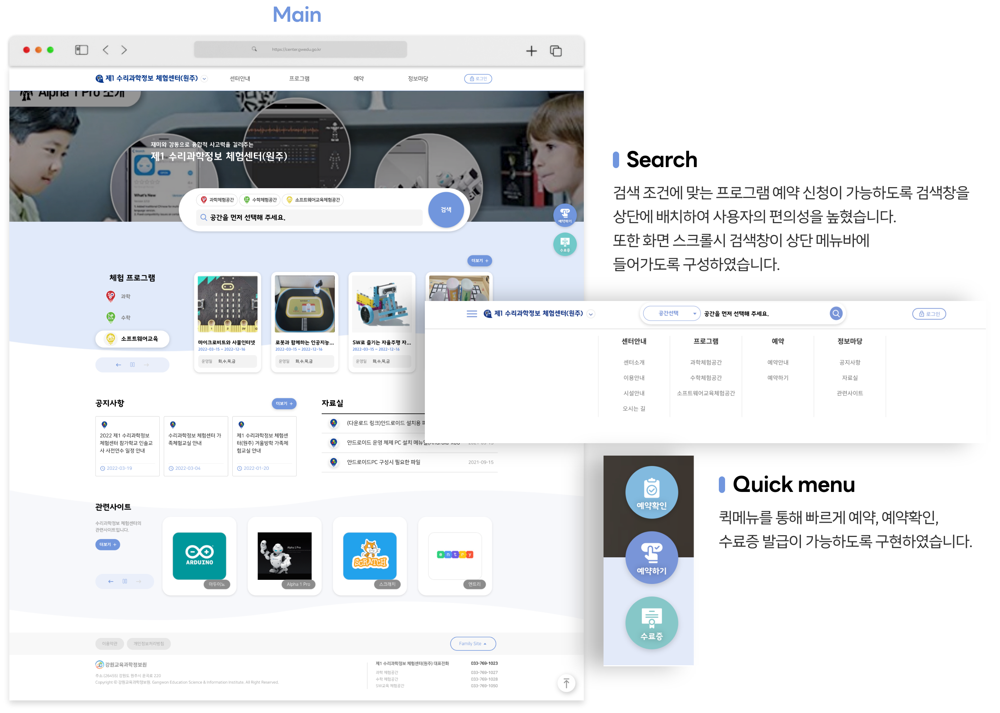
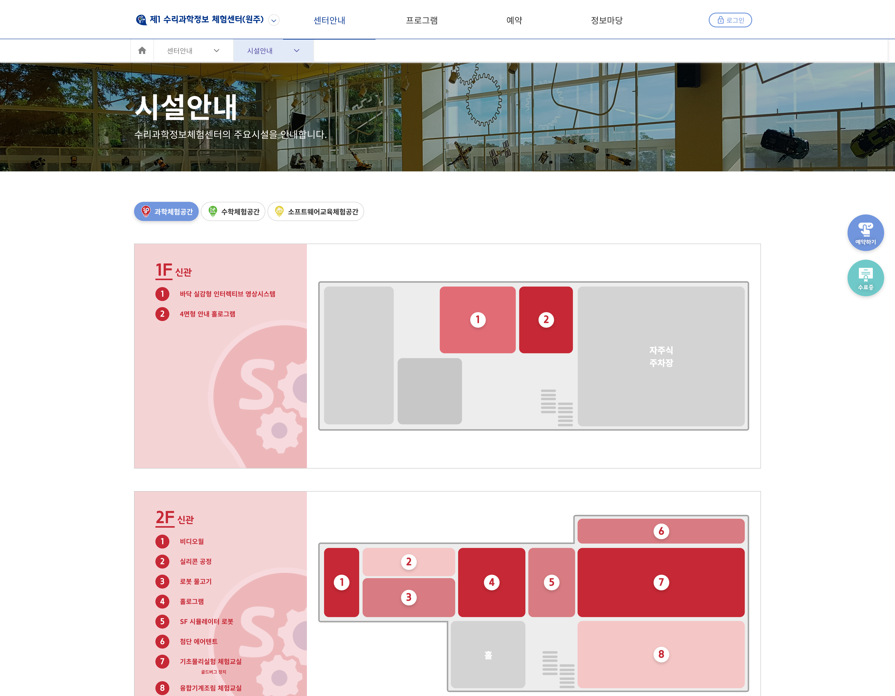
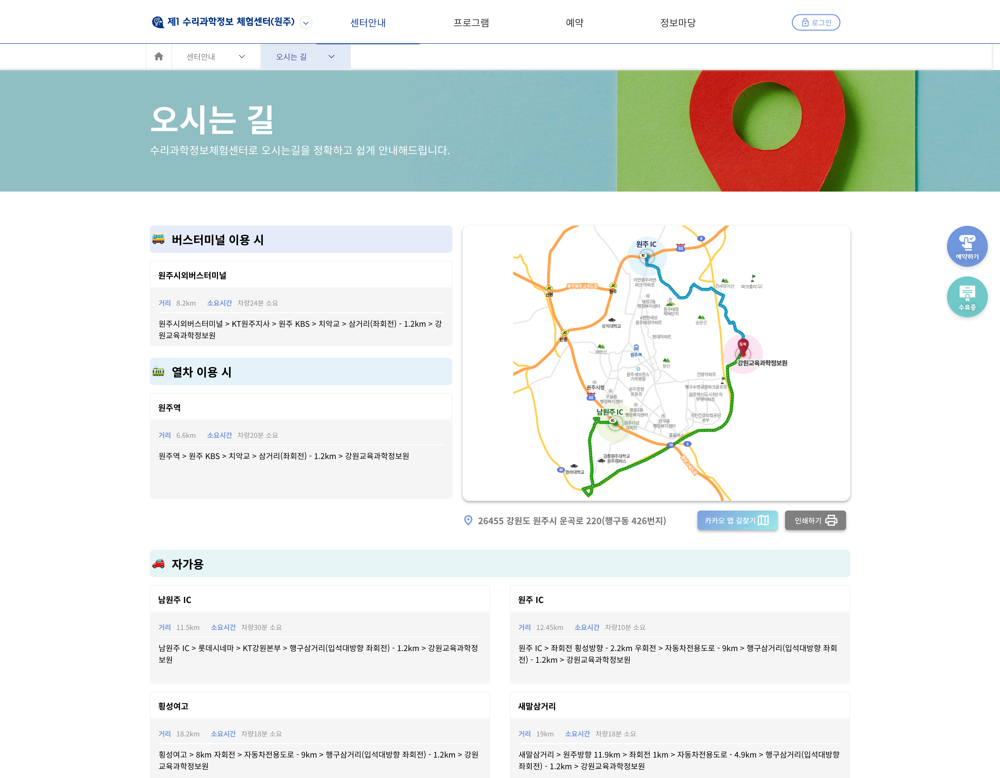
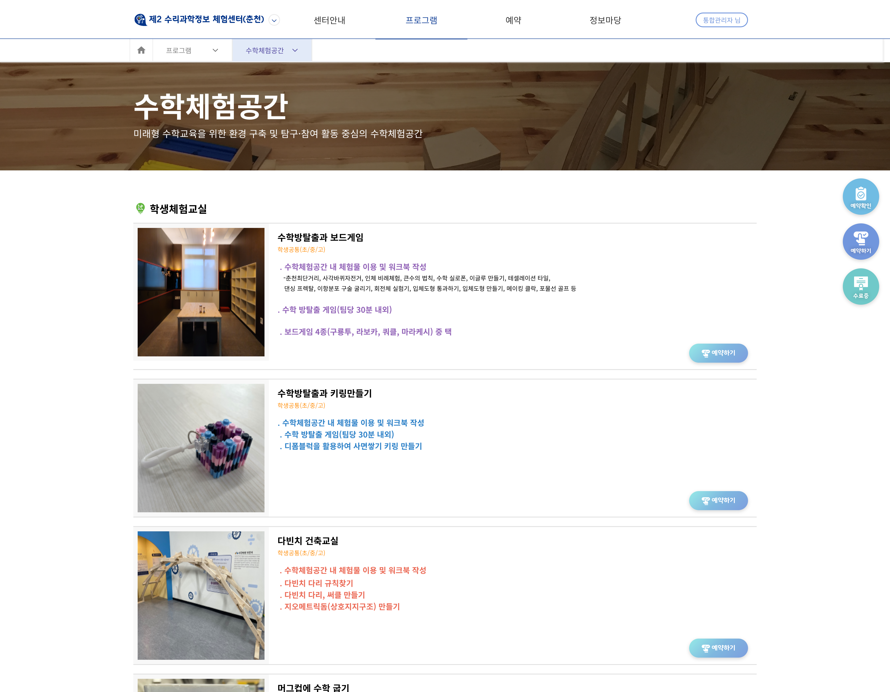
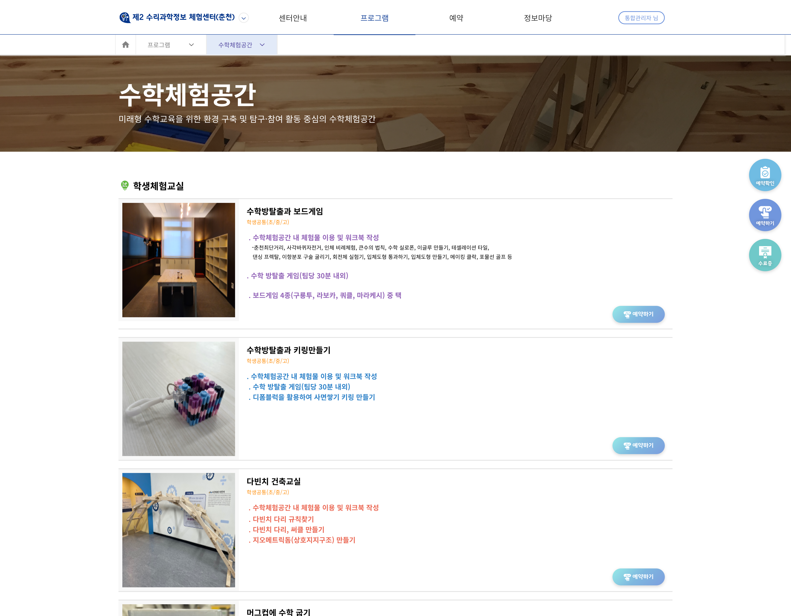
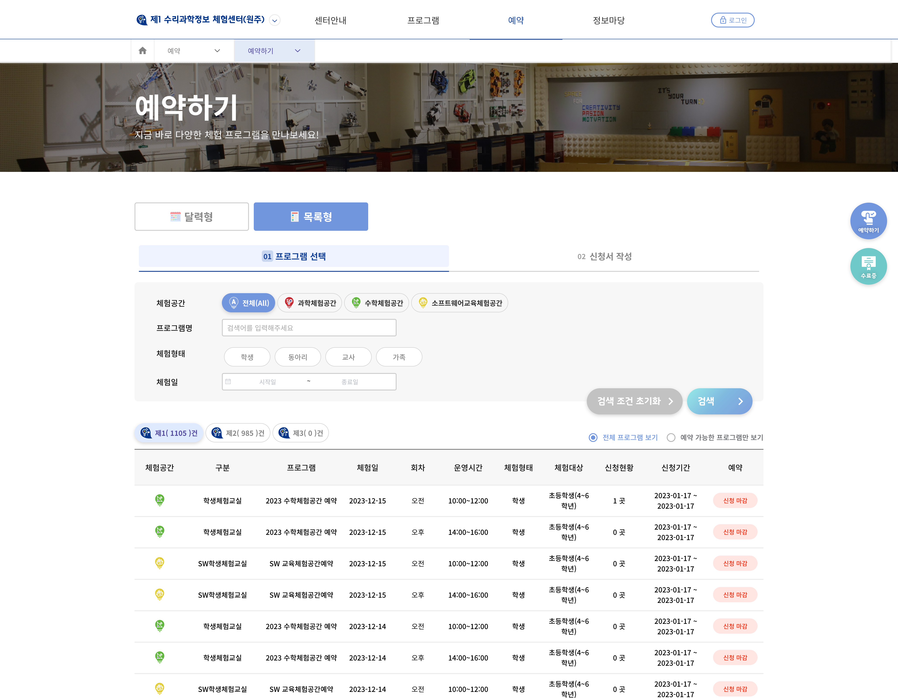
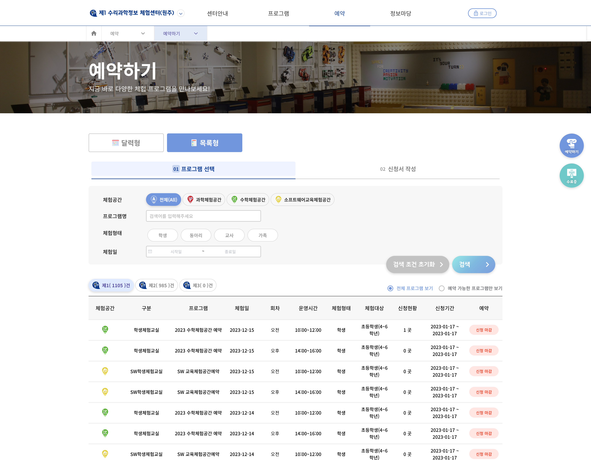

Problem
기존 사이트가 너무 노후되었으며 교원, 학생 중심의 정보 제공 및 예약기능 구현 필요
Goal
홈페이지에 대한 신뢰도와 만족도 향상. 그리고 새로운 역동적인 컨셉으로 디자인하며 주요기능인 체험형태, 대상에 따른 프로그램 예약 시스템 구현
Solutions
-
01.
체험형태, 대상에 따른 프로그램
예약 시스템 구현 -
02.
한눈에 볼 수 있는 예약 현황 시스템
-
03.
퀵메뉴를 통해 빠르게 예약, 예약확인,
수료증 발급이 가능하도록 구현
Style guide

Final Design



 

 
